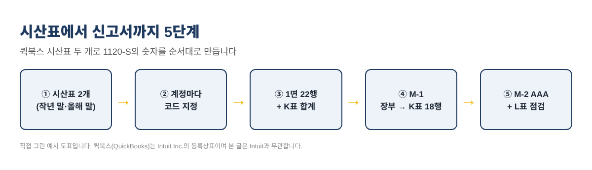
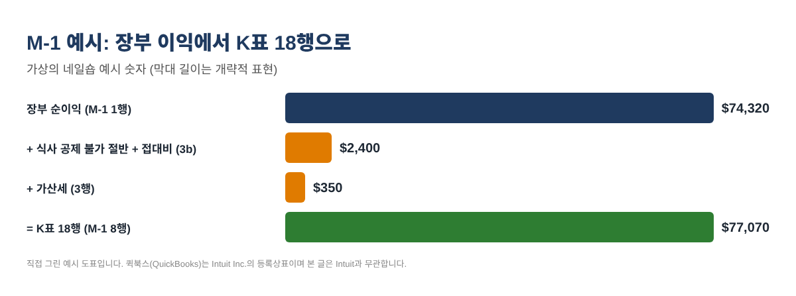
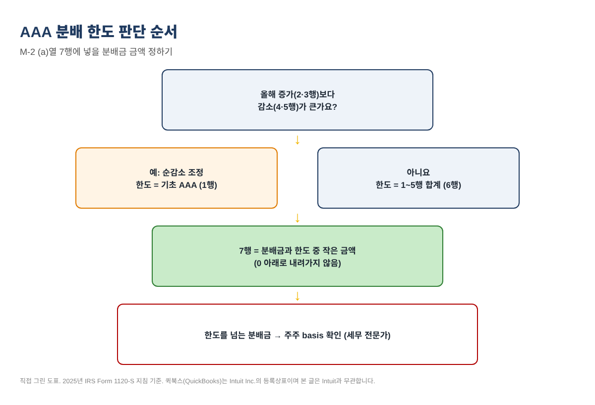

퀵북스 순이익과 S코퍼레이션 신고서가 다를 때: 시산표로 Schedule M-1·M-2·L 맞추는 법
퀵북스로 장부를 쓰는 S코퍼레이션 사장님들이 신고철마다 겪는 문제가 있습니다. 손익계산서의 순이익과 Form 1120-S의 소득이 다르고, 세금 프로그램은 "Schedule M-1 out of balance"라고 하고, 회계사는 이익잉여금이 왜 AAA(누적조정계정)와 다르냐고 묻습니다. 대부분 숫자가 틀린 것이 아니라 장부와 신고서를 잇는 연결표가 없어서 생기는 일입니다. 이 글에서는 시산표 두 개와 엑셀만으로 그 연결표를 직접 만드는 방법을 퀵북스 데스크톱과 온라인 모두에 맞춰 설명합니다.
대상: 2026년분 Form 1120-S를 내는 소규모 S코퍼레이션의 오너, 사무 담당자, 북키퍼(달력 연도 법인 마감은 2027년 3월 15일 월요일). 연말 총자산이 $1,000만 이상이면 M-1 대신 Schedule M-3를 써야 하며, 이 글은 그 경우를 다루지 않습니다.

1단계: 작년 숫자가 작년 신고서와 같은지 확인
2025년 12월 31일 기준 대차대조표를 뽑아 작년 Schedule L의 기말 열과 비교하세요. 다르면 신고 후 누군가 2025년 거래를 고친 것입니다. 먼저 바로잡거나 차이를 메모해 세무 대리인에게 전하고, 다시 생기지 않도록 마감일을 설정하세요. 데스크톱은 Company › Set Closing Date, 온라인은 Account and settings › Advanced › Accounting › Close the books에 있습니다.
2단계: 시산표 두 개 내보내기
퀵북스 데스크톱
- Reports › Accountant & Taxes › Trial Balance로 갑니다.
- 보고서가 12/31/2026에 끝나도록 날짜를 맞추고, 12/31/2025로 한 번 더 실행합니다.
- 선택: Customize Report › Display › Advanced에서 0이 아닌 줄만 표시합니다.
- Excel › Create New Worksheet를 누릅니다.
퀵북스 온라인
- Reports → Standard reports를 선택합니다.
- 검색창에 "Trial Balance"를 입력해 보고서를 엽니다.
- 기간이 12/31/2026에 끝나도록 설정하고(Trial Balance는 종료일 기준), 12/31/2025로 반복합니다.
- Export/Print › Export to Excel을 선택합니다. 엑셀에 0만 보이면 Enable Editing을 누르세요. 엑셀의 보호된 보기 때문인 경우가 많습니다.
두 보고서를 한 시트에 모읍니다. A열 계정 이름, B열 코드, C-D열 2025년 차변·대변, E-F열 2026년 차변·대변. 각 연도의 차변 합계와 대변 합계가 같아야 합니다.
3단계: 계정마다 코드 하나씩 붙이기
코드는 그 계정이 신고서 어디로 가는지 정합니다. 대부분은 간단합니다(매출은 1면 1a행, 급여는 8행). 장부와 세무 차이를 만드는 계정은 다음과 같습니다.
| 계정 종류 | 코드 | 들어가는 곳 |
|---|---|---|
| 업무 식사(50% 한도) | M50 | 절반은 1면 20행, 절반은 M-1 3b행 |
| 접대·티켓·클럽 회비 | ENT | M-1 3b행 |
| IRS·주 가산세, 벌금 | NDP | M-1 3행(기타) |
| 기부금 | K12A | K표 12a행 |
| 장부 감가상각비 | P14B | 세무 감가상각으로 대체, 차이는 M-1 3a/6a |
| 지방채 이자 | TEI | M-1 5a행, M-2 (d)열 |
| 주주 분배금(자본 계정) | L24D | L표 24행, M-2 7행 |
2026년 잔액을 차변을 양수로 하는 숫자로 바꾸는 보조 열을 하나 만듭니다: =E2-F2. 코드별 합계는 수식 하나면 됩니다. 예를 들어 식사는 =SUMIF($B:$B,"M50",$G:$G)(G열이 부호 있는 잔액).
4단계: 1면과 K표 18행 만들기
1면 22행(일반 사업소득)은 수입에서 공제를 뺀 금액인데, 장부와 세 가지가 다릅니다. 식사는 50%만 반영하고(2025년 지침: 식사비는 일반적으로 50%만 공제), 가산세·접대비 같은 공제 불가 항목은 빼며, 장부 감가상각 대신 Form 4562의 세무 감가상각(179조 제외)을 씁니다. 이자·배당·자본이득·179조·기부금처럼 별도 기재 항목은 1면이 아니라 K표로 갑니다.
K표 18행(소득 조정 합계)은 1~10행을 더하고 11~12e행과 16f행을 뺍니다. 보통 소규모 법인이라면 22행 + 이자 + 배당 + 이득 − 179조 − 기부금입니다.
5단계: Schedule M-1 만들기
M-1은 장부상 순이익에서 시작해 K표 18행과 같은 숫자로 끝나야 합니다. 장부에는 있지만 K표에 없는 비용을 더하고(3행: 식사 공제 불가 절반, 접대비, 가산세, 임원 생명보험, 세무보다 큰 장부 감가상각), 장부에는 있지만 K표에 없는 수입(5행: 비과세 이자)과 장부에 없는 세무 공제(6행: 장부보다 큰 세무 감가상각 + 179조)를 뺍니다.
| M-1 행 | 예시 A (가상의 네일숍) | 금액 ($) |
|---|---|---|
| 1 | 장부상 순이익(손실) | 74,320 |
| 3b | 여행·접대 (식사 $2,400의 절반 + 접대비 $1,200) | 2,400 |
| 3 | 기타: 가산세 | 350 |
| 5a / 6a | 비과세 이자 / 추가 세무 감가상각 | 0 |
| 8 | 소득(손실), K표 18행 | 77,070 |
표의 숫자는 모두 예시입니다. 확인: 장부 이익 $74,320 + $2,400 + $350 = $77,070으로 K표 18행과 같습니다. 두 숫자가 다르면 코드가 잘못된 계정이 있거나 K표 항목이 두 번 들어간 것입니다.

6단계: Schedule M-2 (a)열 AAA 만들기
AAA는 이익잉여금이 아닙니다. 작년 M-2 8행 (a)열에서 시작합니다. 2025년 1120-S 지침에 따라 비과세 소득을 뺀 소득만큼 늘리고, 손실·공제와 공제 불가 비용(비과세 소득 관련분 제외)만큼 줄인 뒤, 분배금만큼 줄이되 0 아래로는 내리지 않습니다. 그해 감소가 증가보다 크면("순감소 조정"), 분배 한도는 순감소 조정 전 금액, 실제로는 기초 AAA로 판단합니다.
엑셀 수식: 한도 = IF(증가 + 감소 < 0, MAX(0, 1행), MAX(0, 6행)), 7행 = -MIN(분배금, 한도) (감소는 음수로 입력).
| M-2 행 | 예시 C (손실 난 가상의 카페) | 금액 ($) |
|---|---|---|
| 1 | 기초 AAA | 15,000 |
| 4 | 1면 22행 손실 | (70,400) |
| 5 | 기타 감소 (식사 절반, 가산세) | (1,600) |
| 6 | 1~5행 합산 | (57,000) |
| 7 | 분배금 $24,000 중 $15,000까지만 | (15,000) |
| 8 | 기말 AAA | (72,000) |
예시 숫자입니다. 오너가 $24,000을 가져갔지만 AAA에 반영할 수 있는 금액은 $15,000뿐입니다. 나머지 $9,000은 주주별 basis(Form 7203) 검토가 필요하며, basis를 넘는 부분은 과세될 수 있습니다.

7단계: Schedule L과 이익잉여금 점검
Schedule L은 장부 숫자를 씁니다. 모든 수입·비용 계정과 분배금 계정을 24행에 합쳐 24행 = 이익잉여금 + 올해 순이익 − 분배금이 되게 합니다. 두 열 모두 자산 합계(15행)와 부채·자본 합계(27행)가 같아야 합니다. 마지막으로 24행 변동과 AAA 변동의 차이를 설명해 보세요. 비과세 소득, 감가상각 차이, AAA를 넘는 분배금으로 모두 설명되어야 하고, 남는 차이는 대개 자본 계정에 직접 넣은 분개 때문입니다.
참고로 연간 총수입과 연말 총자산이 모두 $250,000 미만이면(Schedule B 11번) Schedule L과 M-1은 작성하지 않아도 됩니다. 다만 다음 해 AAA를 위해 M-2는 계속 관리하는 것이 좋습니다.
자주 하는 실수
- 오너 인출을 비용이나 급여로 기록(자본 계정이어야 함).
- 식사 계정 하나에 50%·100% 항목을 섞음.
- 가산세를 "Taxes and Licenses"에 넣음.
- 179조를 1면 감가상각으로 입력(K표 11행이 맞음).
- 기부금을 1면에서 공제.
- 이익잉여금을 기초 AAA로 사용.
- 기초 잔액이 작년 신고서와 다름.
자주 묻는 질문
퀵북스 순이익과 1면 22행은 왜 다른가요?
1면은 별도 기재 항목(이자, 이득, 기부금, 179조)을 빼고, 식사를 50%만 넣고, 공제 불가 항목을 빼고, 세무 감가상각을 쓰기 때문입니다. M-1이 그 차이를 하나씩 보여 줍니다.
AAA가 마이너스가 될 수 있나요?
네, 손실 때문에 마이너스가 될 수 있습니다. 다만 분배금만으로는 0 아래로 내려가지 않습니다.
세무 조정을 퀵북스에 분개해야 하나요?
대개는 아닙니다. 장부는 장부 기준으로 두고 M-1이 차이를 설명합니다. 다만 세무 대리인이 장부 수정 분개(예: 감가상각)를 보내면 마감일 전에 반영하세요.
S코퍼레이션 과세를 선택한 LLC도 되나요?
네, Form 1120-S를 낸다면 같습니다. 파트너십(Form 1065)은 M-1·M-2 규칙이 다릅니다.
체크리스트
- ☐ 은행·카드·대출 계정 12/31/2026까지 대조
- ☐ 12/31/2025 잔액 = 작년 Schedule L
- ☐ 시산표 두 개, 차변 = 대변
- ☐ 식사 50%/100% 분리, 가산세·접대비 별도 계정
- ☐ Form 4562의 세무 감가상각과 179조 금액 확보
- ☐ M-1 8행 = K표 18행
- ☐ Schedule L 두 열 모두 일치
- ☐ 작년 M-2 8행에서 AAA 이어 오기
- ☐ 신고 후 마감일 설정
위 과정을 그대로 해 주는 S코퍼레이션 장부-세무 연결표 2026은(는) 아래 무료 키트 다운로드에서 가입 없이 무료로 받으실 수 있습니다(엑셀 + PDF 가이드).
이 글은 교육용 정보이며 세무·법률·회계 자문이 아닙니다. 세법은 바뀔 수 있으니 신고 전 최신 IRS 지침이나 자격 있는 세무 전문가와 확인하세요. 예시 사업체와 숫자는 가상입니다. 퀵북스(QuickBooks)는 Intuit Inc.의 등록상표이며, 본 글은 Intuit과 제휴·보증 관계가 없습니다. QuickBooks is a registered trademark of Intuit Inc.; not affiliated with or endorsed by Intuit.
출처
- IRS, Instructions for Form 1120-S (2025)
- IRS, Draft Instructions for Form 1120-S
- IRS e-file test scenario, Form 1120-S (2026) line layout
- Intuit, Run reports in QuickBooks Online
- Intuit, Lock your books in QuickBooks Online (closing date)
- Intuit, Export your data from QuickBooks
- QuickBooks Community: trial balance exported to Excel shows zeros
- QuickBooks Community: exporting a Desktop trial balance
무료 키트 다운로드
글에서 설명한 내용을 그대로 따라 할 수 있는 도구입니다. 가입 없이 바로 받으세요.
- Excel 계산 도구 (.xlsx)S_Corp_Book_to_Tax_Bridge_2026_EN_KR.xlsx · 54 KB
- 단계별 가이드 (PDF)S_Corp_Book_to_Tax_Guide_2026_EN_KR.pdf · 448 KB
본인과 본인 사업에 무료로 쓰세요. 재판매·재배포는 하지 마세요. 일반 정보이며 세무·법률·회계 자문이 아닙니다. 숫자는 본인 자료로 꼭 확인하세요. QuickBooks는 Intuit Inc.의 상표이며 BIZLEX는 Intuit과 관련이 없습니다.